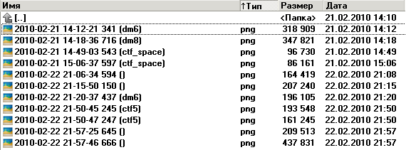

Z-Team Pack is an unofficial client for Teeworlds, a multiplayer 2D shooter game. Changes with respect to the standard clientSummary of changes
|

 |
Completely reworked interfaceThe whole interface of the game, the editor, as well as console command hints, have been translated. New animated menu in the server listFrom now on, instead of boring gray squares there’s shining Sun, green grass, and a running tee :) |
Cyrillic character input
Player nickname auto-completion in the chat
|
Cyrillic character inputYes, now it is possible to type using Cyrillic characters ingame, unlike in the official Teeworlds 0.5.2 client. Cyrillic input is implemented using the FreeType library, however, backwards compatibility with Z-Team Pack version 2 (most commonly used until now) has been kept. Now you can type in any language, and if the font doesn’t please you, it can be easily changed! SmileysNow you can use smileys in the chat :). More info: Table of smileys Player nickname auto-completion in the chatIf you type a part of the nickname of someone who’s presently at the server in the chat and press TAB, their nickname will be automatically completed. In case of ambiguity, repeated pressing of TAB will cycle between the possibilities. |
 |
Extended statistics in the scoreboard
Spectator latency info is also available in the scoreboard. |
 |
Quick menuThose who have too many bindings to fit onto their keyboards, or who just keeps forgetting their bindings: this option is for you! At a press of a button, a small menu resembling the emoticon list will appear, allowing you to choose from a set of predefined commands. The circle is automatically split into equal sectors to fit the exact number of commands you specify. In order to get a quick menu like the one shown in the image, you need to input the following: fastmenu_add hi_all "say hi"fastmenu_add hi_team "say_team hi" fastmenu_add bb "say bb" fastmenu_add bb_team "say_team bb" |
 |
Sushi Tee’s BEEP modThe primary function of the BEEP mod is to playback a sound (when the Change chat sound option is on) every time a word appears in the chat that has been defined in the Search for names string. It is convenient to input your own nickname (or its alternative spellings, or just some part of it). You can define several nicknames separated by commas. Then, every time your nickname appears in the chat, you will hear a loud beep even if the game is minimized. If the Change color of chat messages option is on, the message containing your nickname will be highlighted in brown. This mod also can block flooding (repeated messages from players). |
 |
Sushi Tee’s HUD modThe mod allows you to switch off various graphics elements. It is especially useful when creating movies: when playing back a demo, you can remove any display elements you don’t want captured in your video. You can also use the mod ingame, for instance, to switch off the chat or broadcast messages. The mod can also suppress the sounds of chat messages from the server or players. Anti-rainbowBlocks repeated player color changes. Ever since rainbow client was released (automatically changing skin color), this function has been wished for by many players. Fortunately, this problem did not affect CTF players, once again proving their utter superiority and complete triumph. |
 |
DownloadExtensionThe mod displays the following info during map download:
|
 |
Spectator zoomNow, when spectating, you can change zoom in or out (10% through 500%). The standard key bindings are Num- and Num+ for 5% zoom out/in increment.Client info panelA useful feature for the output of miscellaneous script-related data. Check out how it works when changing the spectator zoom (pressing Num- or Num+). You can send your own messages to the info panel from the console. |
 |
Automated endgame screenshots and demo recordingWhen the corresponding setting is on, at the end of each game (when the scores are shown and the winner is declared), a screenshot/demo will be automatically created. The filename format is: YYYY-MM-DD HH-MM-SS MS (map). Example: 2010-01-11 07-31-17 273 (ctf5).png. Demo editingFrom now on, you can keep only your favorite part of the demo. Just press [ at the start and ] at the end, choose a new filename for your demo if you need to, and press Rewrite. |
 |
Camera followingWhen watching the game in spectator mode, you can follow any player you choose. When they get killed, the camera will start to follow their killer. Left mouse button cycles between players, right mouse button switches between following and free view modes. Camera mode status is shown in the top left corner. |
 |
3D effectsThese include shadows from text, items, textures, creating a 3D-like feel. Eye-candyExtra visual effects including new death animation, smoke, flag carrier trail. |
 |
Server list available ingameNow you can keep track of the server list without having to disconnect. |